Visualization, Intro
Customer Analytics Week 1
This version: April 2026 | License: CC BY 4.0 | We use javascript to track readership.
We welcome reuse with attribution. Please share widely.
Dog==Draymond || Dray || Click Clack || Major Jealous
Cat==Luka || Liquid || Hunter || Captain Kitty
Data Visualizations (Viz)
- “The greatest value of a picture is when it forces us to notice what we never expected to see.”
- Boxplot Inventor John Tukey
- A visualization succeeds when it enables deeper questions, like “why”
Data Viz are older than 0
This ancient Mesopotamian clay tablet is estimated to be nearly 4,000 years old. Data visualization is older than English and older than zero. Are those blanks zeros or missing values?
Translated
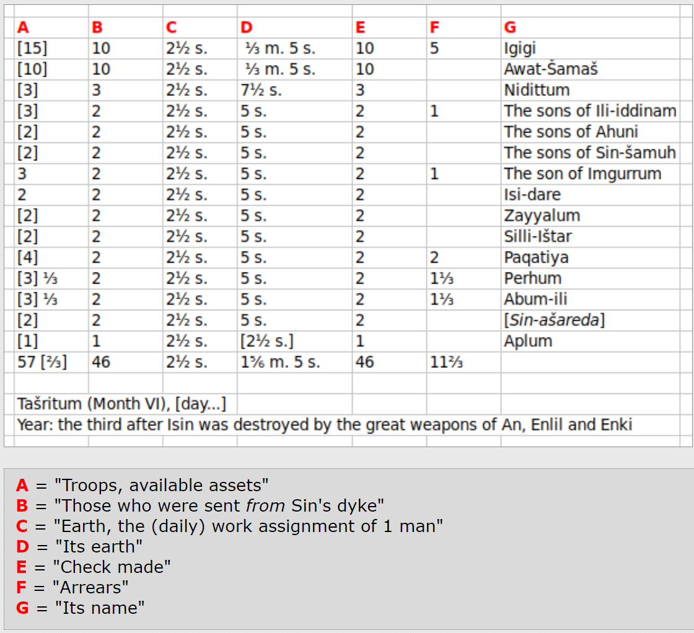
This attempted translation shows what appears to be accounting for construction labor. Columns B and E look like duplicates, and A appears to sum B and F. Are those blanks zeros or missing data?
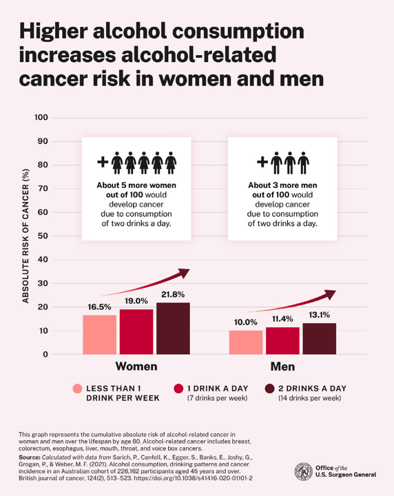
This visualization shows absolute increase in cancer risk and offers information for different audiences, with a pleasing presentation despite a grave topic.
Does the graph show how much a person’s cancer risk changes when they change their drinking behavior? (I.e., a “causal effect”)
Viz can build trust, understanding
- Humans are great at interpreting visual patterns
- Can reveal unexpected data properties
- Understandable to non-specialists, including managers and customers
- Viz are lingua franca across disciplines
- Easily replicated -> More easily trusted
- Viz succeed when they raise deeper questions
- Asking the next question indicates acceptance; facts prompt explanations
- “I wonder why that is….” or “Maybe that’s because…”
- Viz usually won’t settle major debates, but viz is the first step
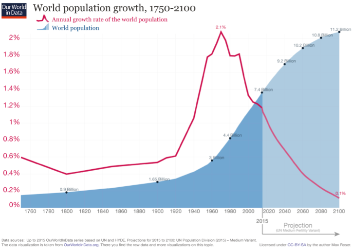
The world population curve has a sigmoid shape, also known as an S curve, in which growth increases and later decreases. A pop science book, Population Bomb by Ehrlich (1968), forecast mass starvation, since population was increasing exponentially but food production was increasing linearly. Why was Ehrlich’s forecast so far from correct?
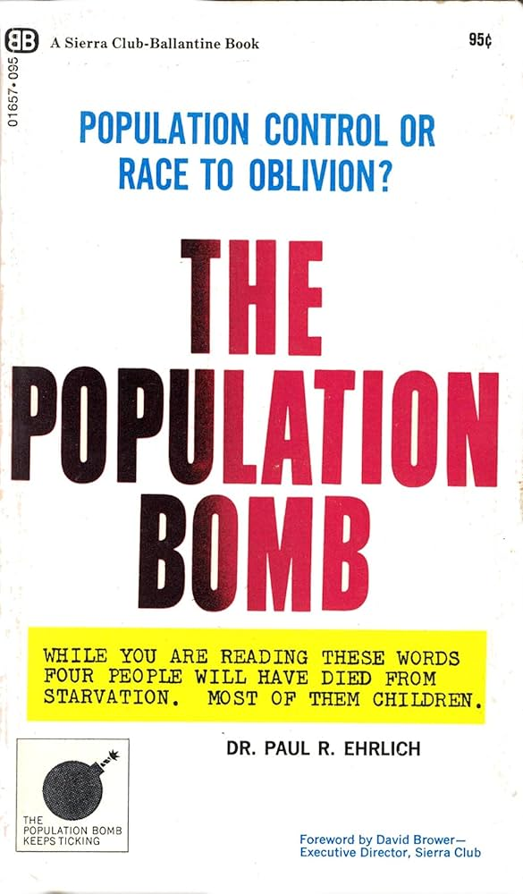
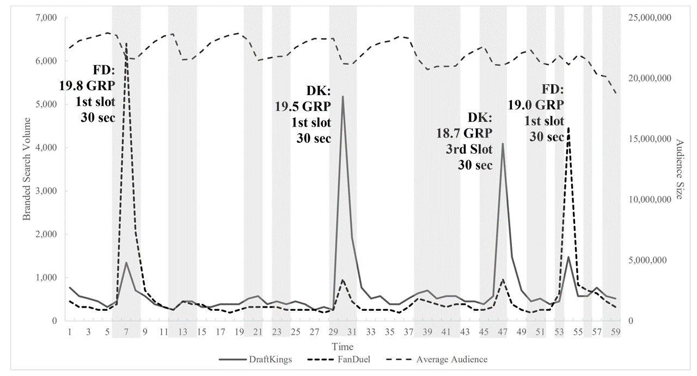
Google searches for DraftKings, FanDuel during an NFL Game, 9-10 P.M. EST. Commercial minutes are shaded. What do you see?
SDPD Crime Reports Near UCSD
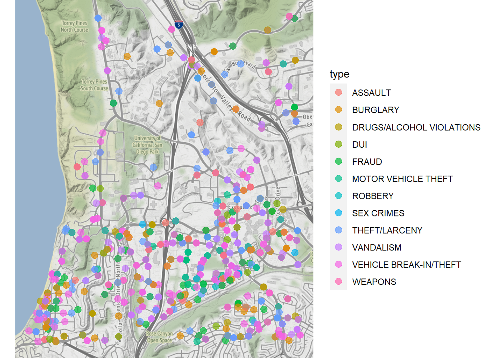
This map graphs one year of San Diego Police Department police reports. When is data zero vs. missing? Provenance is key. What kind of decisions could this inform?
Data Provenance
- Describes people, entities, and activities involved in producing, compiling, transforming & sharing data
- Crucial in determining quality, reliability, trustworthiness
- Verifiability requires source data & cleaning scripts
- Investigating provenance requires and deepens domain expertise
- Typically turns up unexpected information
- When can you trust provenance information?
- Usually, provenance descriptions are imperfect. Best to treat provenance doc claims as hypotheses to be verified in the data
- Financial variables are most likely to be accurate due to auditing requirements
- Sometimes, provenance descriptions are marketing documents
A key principle in Business Analytics is GIGO: Garbage In, Garbage Out. Don’t analyze noise.


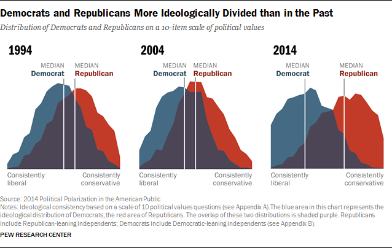
“Graphics journalists urge that each chart should make exactly one point – and it should be obvious how to read it. Often charts say (1) number goes up/down recently, (2) number goes up/down when some event occurred, (3) one set of lines diverges from another set of lines (or, one line is an outlier compared to the rest), (4) the distribution is bimodal.” –Jeremy Merrill, WaPo. “Scientific charts are often the opposite of this – they have four variables, six symbols and are explained two pages away.”
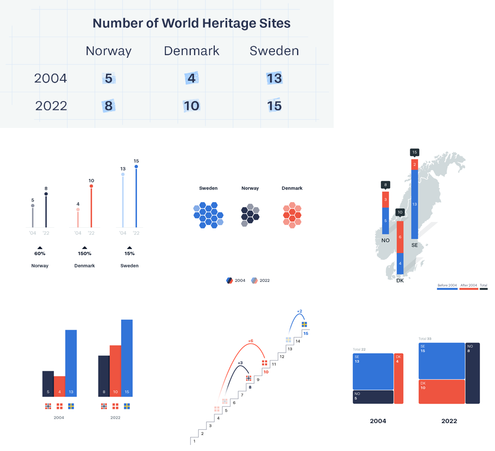
The same dataset can be represented many different ways, each emphasizing different comparisons. Here is a very simple dataset; what comparison does each graphic communicate? How would you summarize each graphic in a sentence?
Honest Viz
- Usually start axes from 0, choose scales judiciously
- Show all relevant data, label accurately
- Discretize and smooth judiciously
- Show uncertainty when relevant
- Cite data sources
Misleading visualizations can indicate bad faith. You want to avoid mistaken interpretations of your work, and identify misleading impressions created by others.
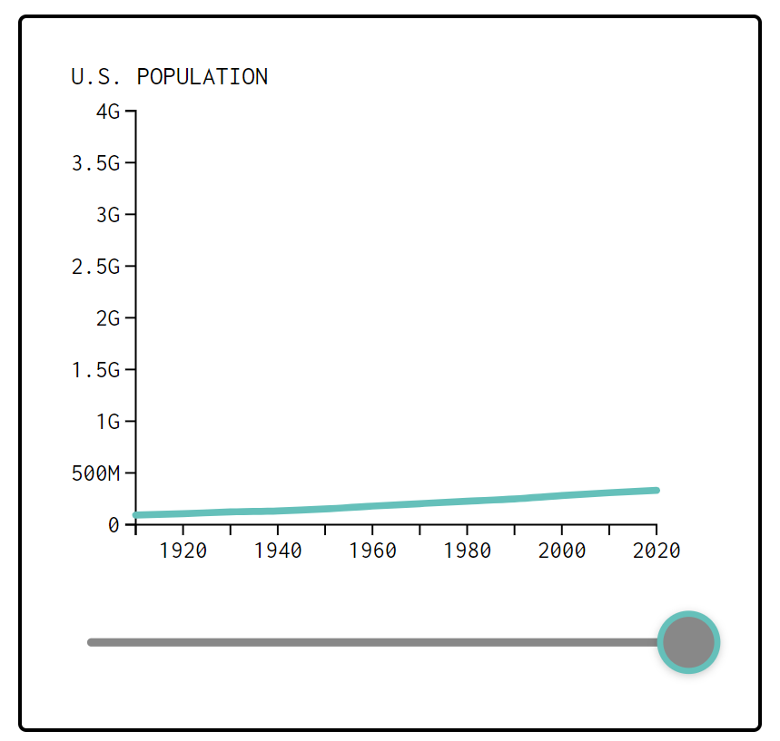
Visualize data before you model anything
- 4 Datasets, Same \(\hat{\beta}^{OLS}\), i.e. same \(\frac{x'x}{x'y}\)
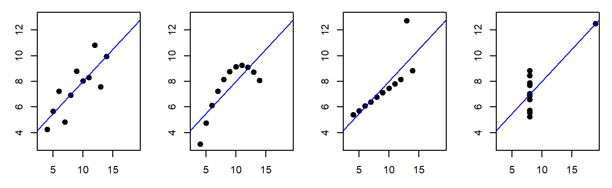
This is why we shouldn’t just use regression to summarize data. What does each picture tell us?
Customer Analytics
Customer
- Receives good or service in exchange for payment (money, time, attention)
- Has agency: Can say “no”
- “The purpose of business is to create and keep a customer.”
-Drucker - “There is only one boss. The customer. And he can fire everybody in the company from the chairman on down, simply by spending his money somewhere else.” -Walton
- “In the long term, there’s never any misalignment between customer interests and shareholder interests.” -Bezos
related Consumer, Client
Analytics
- Using data to improve decisions
- Popularized by Charles Taylor in 1910s
- Further popularized by Moneyball (2011)
- From less to more sophisticated: Measurement, Heuristics, Graphics, Models, Predictions, Automation, Optimization, Personalization, …
- Can be deceptively difficult
related Expert systems, business intelligence, data science, AI. Terms change frequently.
First Law of Customer Analytics
- No Customers, No Business
- No Customers ->
No Revenue ->
No Profit ->
No Business
QED
Which owners or employees in the business can afford to ignore customers?
Second Law of Customer Analytics
- More Customers, More Profits
- More Customers ->
More Revenue ->
More Profit
QED- These are empirical tendencies, not logical necessities
- Individual customers can be unprofitable if (price-cost)<0
- Marketing Objective: Maximize Long-term Profits
- Long-term focus mostly aligns our interest with customers;
Sidesteps or reduces most ethical dilemmas - Long-term focus seems to first attract customers, then retain and develop them
- Long-term focus mostly aligns our interest with customers;
Marketing has a marketing problem. Most people confuse marketing with ads; sales; or bullshit (“persuasive speech without regard for the truth”). This is because real marketing decisions are made at the top of the org, and short-term incentives often lead marketers into unethical choices.
Example of Great Marketing: Netflix
- Consumer surplus
- Suppose customer pays $20/month, watches 60 hours: $0.33 per entertainment hour, or $0.15/hour with ads, or less with shared accounts
- A la carte rentals cost $1-2+/hour; other streaming services more per hour consumed
- Non-video entertainment tends to be much more expensive
- Social benefits may accrue from shared viewing
- Producer surplus
- NFLX spent $18B on content in 2025, 325 million subscribers, about $4.60/user/month
- Cost structure: High fixed, low marginal
- Ads likely earning around $7-8 per recipient/month
- Net profit margin about 24% in a competitive category
Strategic consistency reduces customer risk. Other EDLP (vs High-Low) businesses: Costco, Trader Joes, Walmart. Common tension between short-term management and long-term strategies.
How can we use customer data?
- Businesses have 4, and only 4, ways to make money:
Acquire, develop, retain and “fire” customers- This is called Customer Relationship Management (CRM): week 8
- Marketing mix (“4 P’s”): Improve product offerings, prices, promotion, distribution. Tactics we use to attract, develop, retain and fire customers
- Incorporate customer heterogeneity for targeting, personalization, recommendations, product development…
Firing customers is typically indirect, such as withdrawing preferred products or declining to encourage further purchasing. Why is firing customers usually controversial?
Example: Nielsen
Consumer Panel Data include longitudinal data beginning in 2004. These data track a panel of 40,000–60,000 US households and their purchases of fast-moving consumer goods from a wide range of retail outlets across all US markets.
Retail Scanner Data consist of weekly pricing, volume, and in-store marketing info generated by point-of-sale systems from 90+ participating retail chains across all US markets. Data begin in 2006.
Retail industry always adopts customer analytics frameworks early. Consumer panel and retail scanner data are foundational in packaged goods categories.
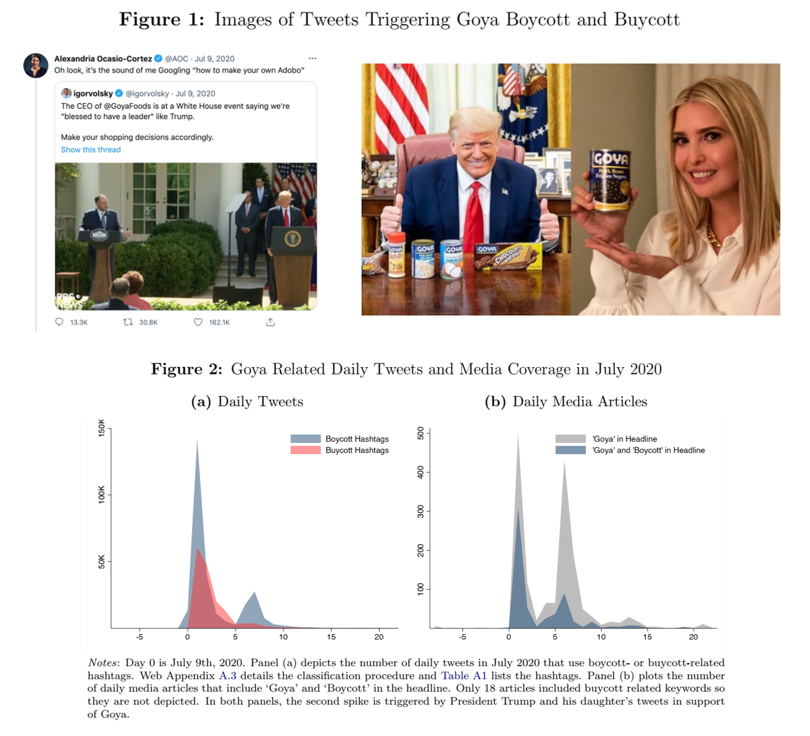
On July 9, 2020, the CEO of Goya praised President Trump during a White House meeting, generating calls for a consumer boycott.
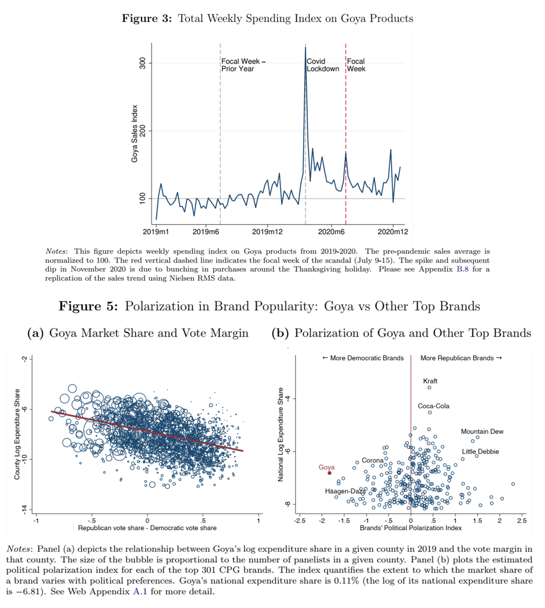
Despite calls for a boycott, total sales rose, mostly because Republican areas started buying Goya. Without customer data, we would be shooting in the dark.
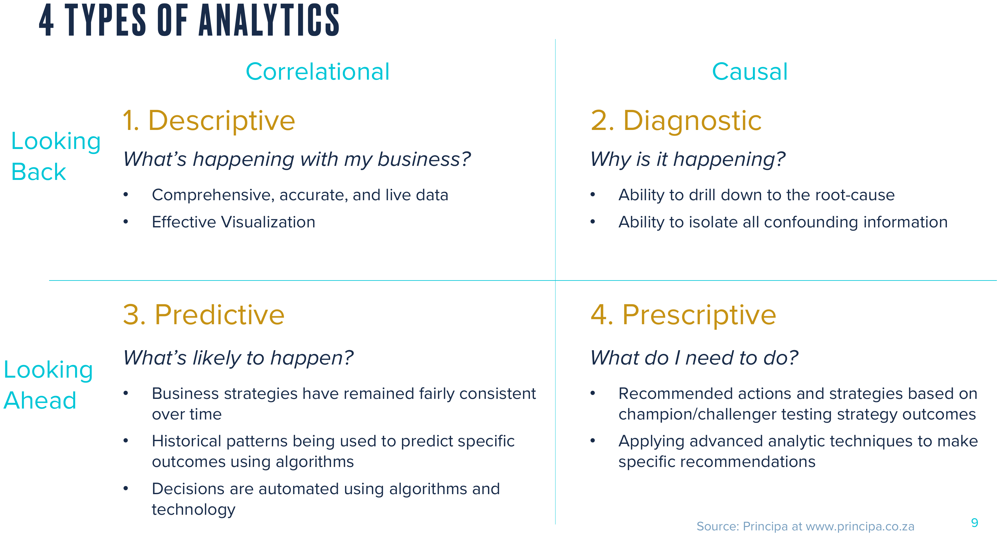
Descriptive (what happened), diagnostic (why), predictive (what will happen), and prescriptive (what should we do). Which type is hardest?
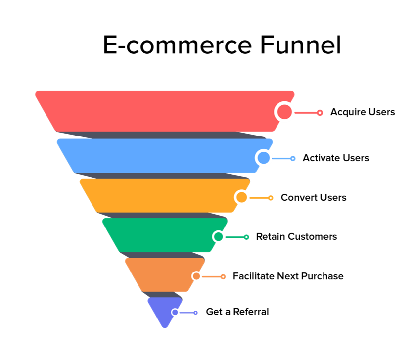
This model is also known as the purchase journey. Very likely the most popular empirical analytics framework ever in customer analytics. How does it facilitate decisionmaking?
E-commerce Analytics
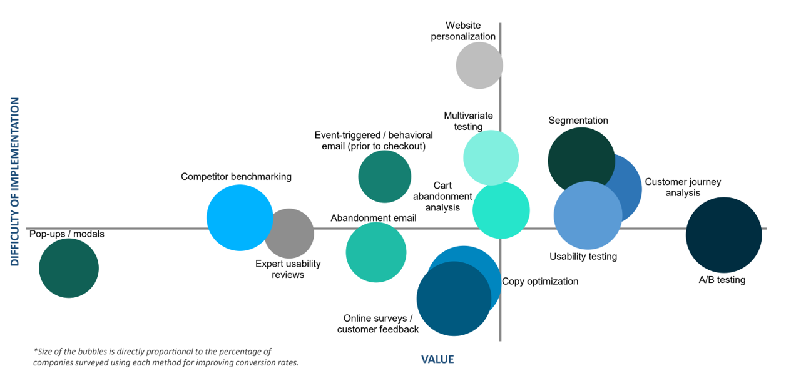
These bubbles represent analytics techniques used to address customer funnel-related goals. 800 e-commerce pros were surveyed; companies using 9+ data-driven methods were most satisfied with their conversion rates. The optimal number of A/B tests was 3-5 per month. Why do you think pop-ups are so common?
Signs of a great analytics org
- C-level champion(s), i.e. C{D,E,A,F,M,O}O
- Analytics career tracks are well established
- Centralized team regulates data, arch., standards & tools
- Decentralized analysts collaborate with execs
- Careful in-housing/outsourcing decisions about analytics
These are questions you can ask in job interviews.
Why is analytics hard?
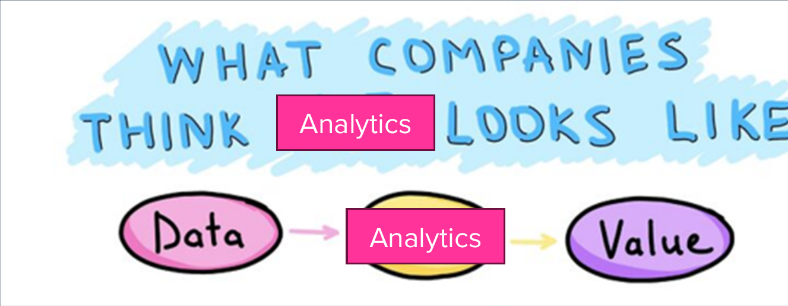
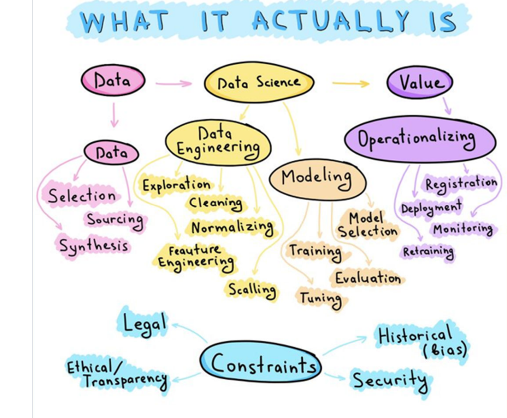
- Executives may be territorial, prefer hunches, or misunderstand what data can and cannot do
- Analysts are expensive, hard to find, and not always interested in the business context
- Culture determines whether analytics makes decisions or merely justifies them; low-trust environments punish messengers and underuse data
Analytics works best when leadership creates an environment that enables analytics investments and rewards disciplined decisionmaking, with retrospective decision evaluations and continuous-learning feedback loops. How have you seen analytics used in practice?
Analytics truisms
- Analytics matters more in B2C than B2B (why?)
- Selection effects are usually large
- treatment effects are usually small
- Key exceptions: Price or “free” giveaways
- Agencies lie about data sometimes
- “If it’s written in LaTeX, it’s probably correct”
Vocab
Common language facilitates communication
Customer level
- Core need: identifiable problem a customer wants to solve. Could be functional, emotional, social, profit-motivated, etc. Related: desire, want, pain point
- Core benefit: Customer’s desired outcome of a purchase. E.g., commuters need to get to school, not necessarily cars
- Consumer: Entity that experiences the core benefit
- Customer: Entity that purchases and pays
In what markets does the customer often differ from the consumer? Known as “Choosing for others.”
Product level
- Product/service/experience: Distinct offering that provides the core benefit
- Features: Aspects of a product providing additional tangible or intangible benefits
- Value proposition: Statement that describes utility( Core benefit + features - price )
- Contribution margin: Price — marginal cost
- Competitor: Any paid or free alternative that addresses the core need. E.g., commute by bike, walk, bus, trolley, Uber, scooter, skateboard; work from home
Market level
- Market: Potential customer group with common core need
- Segment: Distinct subgroup of similar customers
- Targeting: Which segment(s) a firm tries to serve
- Positioning: Specification of product features to suit targeted segments
- Marketing: Practice of meeting customer needs profitably
- Marketing: Business discipline that focuses most on customers
- Ads & sales: Worthless without good value prop and positive margin
In what markets do Uber and Zoom compete?
Legacy Terms
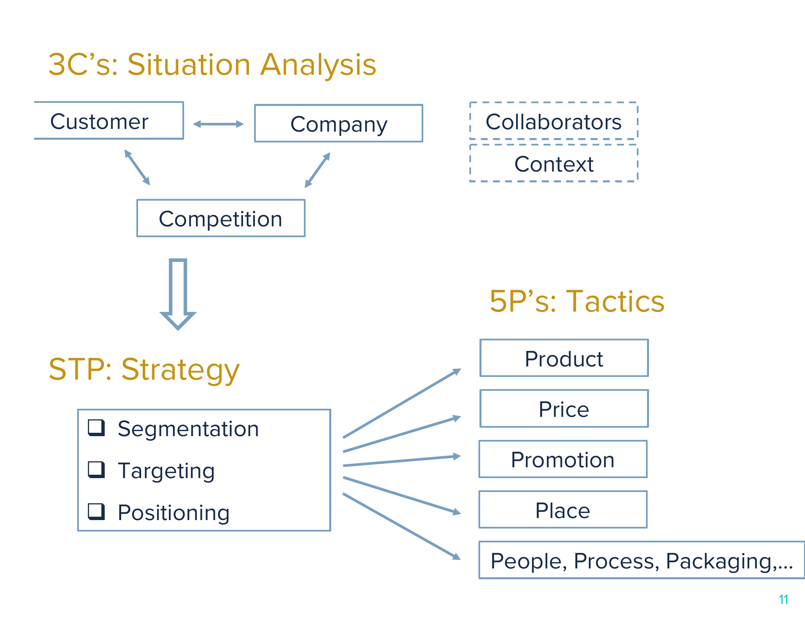
You need to know these well if you interview for marketing roles. Generations of marketing professionals were educated and continue to think this way. Still relevant, but less central, thanks to customer data & analytics abundance. MGT 103 complements this course well by covering these topics in depth, but without the same deep focus on customer data.
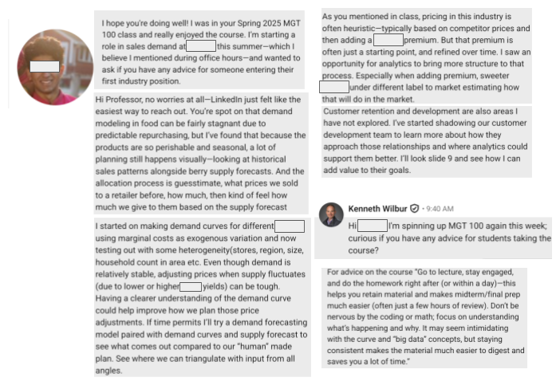
MGT 100 Principles
- Survey the field broadly, pointers for deeper learning. Why R?
- Piazza for all asynchronous interaction. No email or canvas messages
- Important for fairness, timeliness, contribution scores & instructional team collaboration
- “When it comes to LLMs, skillful prompting leaves amateurs in the dust.”
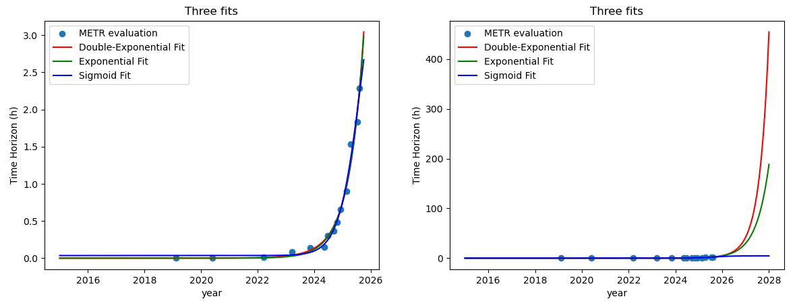
Y axes indicate the human-expert task-completion time (in hours) that a frontier agent can complete with 50% reliability. Cox (2006) said “How [the] translation from subject-matter problem to statistical model is done is often the most critical part of an analysis.” What is model mis-specification? How does this figure into the public conversation about future AI capabilities? Will AI become all-powerful or should you study and build skills?
How I use and don’t use LLMs (Apr. 2026)
- I don’t use LLMs to
- Communicate with humans I know
(don’t want to offend) - Read challenging material
- Ideate or scope projects
- Decide how to code what I want
- Verify code does what I asked
- Write first drafts of anything I care about
(“Writing is thinking”)
- Communicate with humans I know
- I use Claude Code daily with
/effort maxto- Suggest code plans and write code
- Check code output vs. prompts before I check it myself
- Troubleshoot and debug errors
- Copy edit and criticize my writing
- Complicated searches
- Summarize text and learn simple things
- Ken’s LLM Usage Principles: 1. Embrace discomfort, maintain and deepen my differentiating skillset. 2. Use LLMs to speed up low-level tasks with great training data. 3. Use domain knowledge to challenge LLM output, go to primary sources to verify key points. 4. Training data contain all perspectives found on the internet, the prompt determines which perspective is reflected in the response. 5. All complicated prompts contain unstated assumptions, don’t ask the LLM to fill in the blanks. 6. Never use a free LLM.
My use/non-use cases reflect my role as an academic researcher and educator. Your optimal use/non-use cases are likely to differ. Where has LLM use helped in your education? Has it ever limited your education? How can it help in MGT 100?
Please write down your intentions for this class on Canvas. How will you measure your effort? Please don’t say grades alone; grades are outcomes, not inputs. Measurement is central in analytics; you cannot manage what you do not measure.
Coding & Script
- Conjecture:
(debugging difficulty) is exponential in (lines of code) - We can code fast or slow. “Go slow to go fast”
- Pipe: y <- f(g(x)) is the same as y <- x |> g |> f
- Old pipe was %>% ; remains widely used
Bad habit: Write the whole script, run it, see where it breaks. Good habit: test each chunk before writing the next one.
Today’s script
- Data Import/export
- Data manipulation, summarization
- 5 verbs: Summarize, select, filter, arrange, mutate, group_by
- Univariate statistics
- Univariate plots
- Bivariate statistics
- Bivariate plots
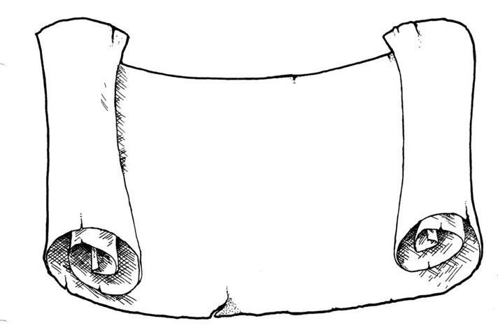
Wrapping up
Week 1 Competition
| Week (relative to endorsement) | Region | Goya sales |
|---|---|---|
| -4 | Right-leaning | 87 |
| -3 | Right-leaning | 85 |
| -2 | Right-leaning | 87 |
| -1 | Right-leaning | 90 |
| 0 | Right-leaning | 140 |
| 1 | Right-leaning | 133 |
| 2 | Right-leaning | 110 |
| 3 | Right-leaning | 95 |
| -4 | Left-leaning | 158 |
| -3 | Left-leaning | 159 |
| -2 | Left-leaning | 158 |
| -1 | Left-leaning | 159 |
| 0 | Left-leaning | 176 |
| 1 | Left-leaning | 170 |
| 2 | Left-leaning | 162 |
| 3 | Left-leaning | 158 |
Visualize Goya’s weekly average sales in right- and left-leaning regions pre/post a major endorsement.
Data: goyadata <- readRDS(url("https://raw.githubusercontent.com/kennethcwilbur/mgt100/main/data/goya_sales.rds"))
Your visualization should make a clear point and be very easy to understand. Submit your R script and visualization on Canvas.
Recap
- Customer analytics :
Using customer data to improve decisions - Data Viz is the first step in customer analytics
- Marketing : Meeting customer needs profitably
- Analytics types:
Descriptive, Diagnostic, Predictive, Prescriptive - Summarize, select, filter, arrange, mutate, group_by
Going further
- Data-enabled storytelling (Wilke 2019)
- GGplot2 YT video
- Elegant Graphics for Data Analysis (3e)
- Big Book of R: Lovingly curated, well organized, free resource directory for nearly any R problem
- A Layered Grammar of Graphics (Wickham 2007)